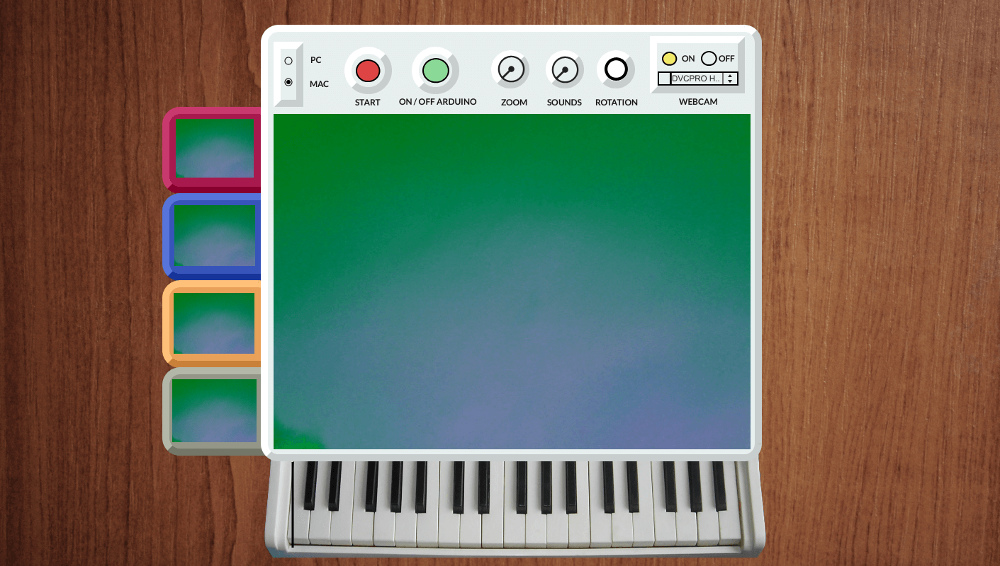

Space-Time
What happens if we point a video camera at its own image? A picture inside a picture? The repetition of the captured picture in an infinite loop creates a set of unexpected and abstract patterns, questioning the observer on the origin of those images, building new meanings and perception states throughout its constant transformation in time and space. This project aims at exploring the creation of virtual spaces through the video feedback phenomenon and the manipulation of video and sound, promoting states of immersion and illusion, in which the viewer can open the doors of his/her imagination, both physically and mentally interacting in a sort of infinite corridor of images in constant transformation.
Interactive installation
Software: max jitter msp
Hardware: arduino, electronics

Experimental Animation: Illusionary Worlds
Lófte, Porto 2012
Interactive installation and presentation of the project
Interactive installation and presentation of the project


IRI, Imagens do Real Imaginado, Porto 2012
Documentary Photography and Cinema Festival
Documentary Photography and Cinema Festival
Encontrarte, Amares 2013
Festival of Experimental Animated Cinema
Festival of Experimental Animated Cinema